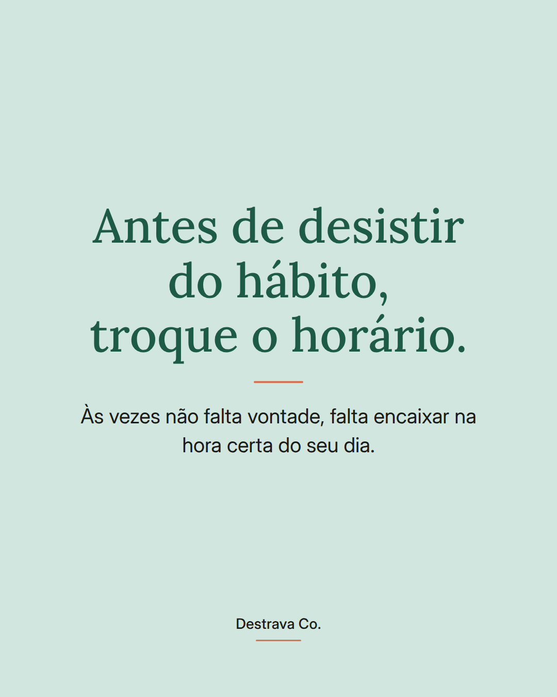
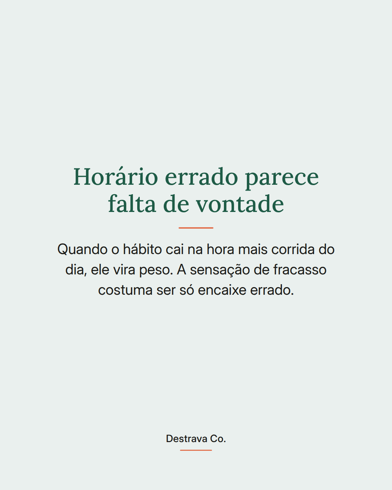
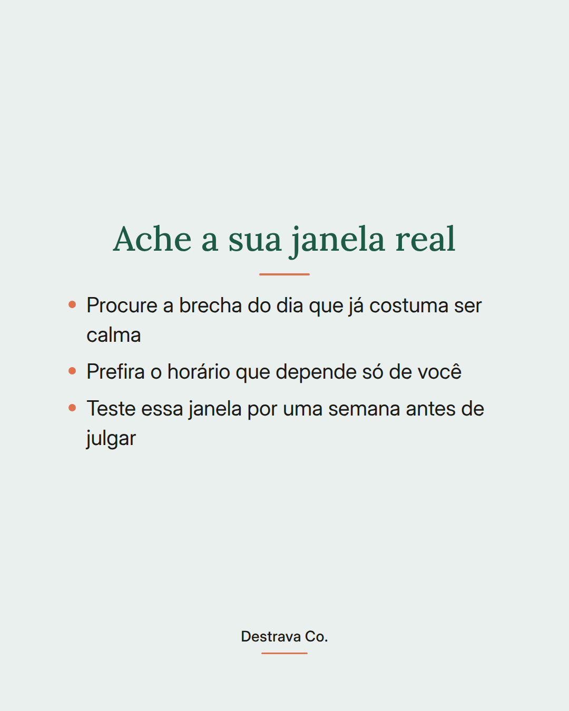
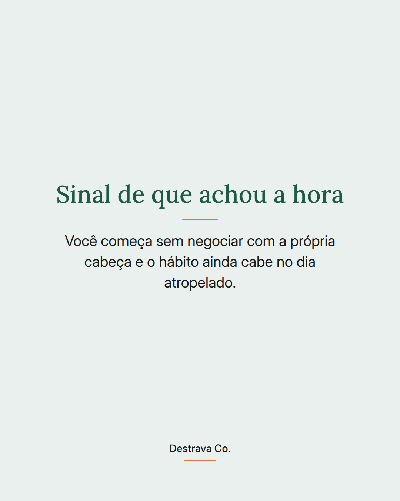
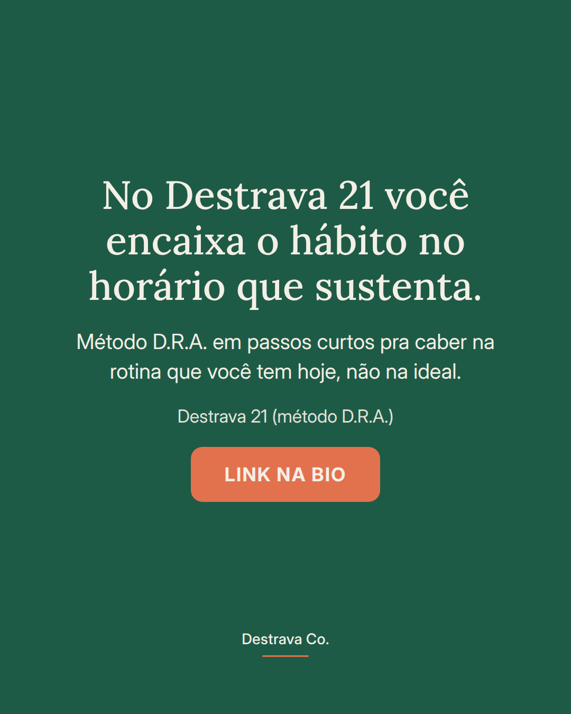
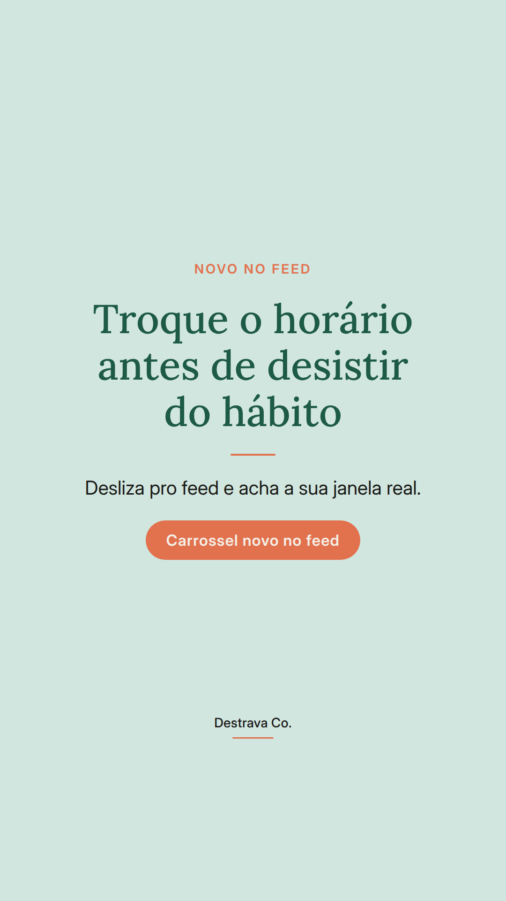
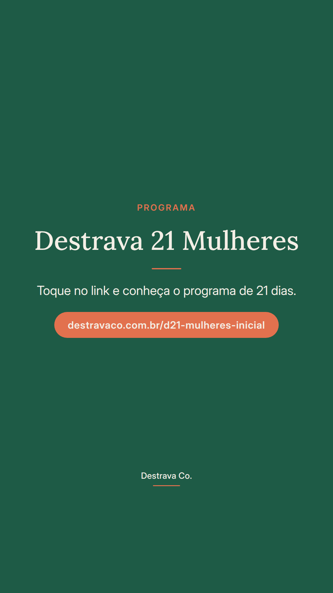

Hábito que não cola pode ser só horário errado, não falta de vontade.
Antes de desistir, teste mover o hábito pra outra hora do dia.
A gente costuma marcar o autocuidado justo no pedaço mais apertado da rotina: o fim da tarde com casa cheia, o meio da manhã de reunião atrás de reunião. Aí não acontece, e a conclusão rápida é que o problema é você.
Na maioria das vezes, o problema é o encaixe. Procure a brecha que já é mais calma, prefira um horário que dependa só de você e dê uma semana de teste antes de concluir qualquer coisa.
Quando a hora é a certa, você começa sem negociar com a própria cabeça. E é isso que segura a constância na semana ruim.
Salva pra lembrar no próximo dia em que pensar em largar, e manda pra uma amiga que anda se cobrando demais. Se quiser um caminho já organizado, o Destrava 21 te espera no link da bio.